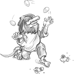
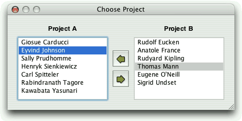

Drag and drop is a modern and intuitive way of transferring information within an application or between different applications. It is often provided in addition to clipboard support for moving and copying data.
In this chapter, we will see how to add drag and drop support to an application and how to handle custom formats. Then we will show how to reuse the drag and drop code to add clipboard support. This code reuse is possible because both mechanisms are based on QMimeData, a class that can provide data in several formats.
Drag and drop involves two distinct actions: dragging and dropping. Qt widgets can serve as drag sites, as drop sites, or as both.
Our first example shows how to make a Qt application accept a drag initiated by another application. The Qt application is a main window with a QTextEdit as its central widget. When the user drags a text file from the desktop or from a file explorer and drops it onto the application, the application loads the file into the QTextEdit.
Here's the definition of the example's MainWindow class:
class MainWindow : public QMainWindow
{
Q_OBJECT
public:
MainWindow();
protected:
void dragEnterEvent(QDragEnterEvent *event);
void dropEvent(QDropEvent *event);
private:
bool readFile(const QString &fileName);
QTextEdit *textEdit;
};The MainWindow class reimplements dragEnterEvent() and dropEvent() from QWidget. Since the purpose of the example is to show drag and drop, much of the functionality we would expect to be in a main window class has been omitted.
MainWindow::MainWindow()
{
textEdit = new QTextEdit;
setCentralWidget(textEdit);
textEdit->setAcceptDrops(false);
setAcceptDrops(true);
setWindowTitle(tr("Text Editor"));
}In the constructor, we create a QTextEdit and set it as the central widget. By default, QTextEdit accepts textual drags from other applications, and if the user drops a file onto it, it will insert the file name into the text. Since drop events are propagated from child to parent, by disabling dropping on the QTextEdit and enabling it on the main window, we get the drop events for the whole window in MainWindow.
void MainWindow::dragEnterEvent(QDragEnterEvent *event)
{
if (event->mimeData()->hasFormat("text/uri-list"))
event->acceptProposedAction();
}The dragEnterEvent() is called whenever the user drags an object onto a widget. If we call acceptProposedAction() on the event, we indicate that the user can drop the drag object on this widget. By default, the widget wouldn't accept the drag. Qt automatically changes the cursor to indicate to the user whether the widget is a legitimate drop site.
Here we want the user to be allowed to drag files, but nothing else. To do so, we check the MIME type of the drag. The MIME type text/uri-list is used to store a list of uniform resource identifiers (URIs), which can be file names, URLs (such as HTTP or FTP paths), or other global resource identifiers. Standard MIME types are defined by the Internet Assigned Numbers Authority (IANA). They consist of a type and a subtype separated by a slash. The clipboard and the drag and drop system use MIME types to identify different types of data. The official list of MIME types is available at http://www.iana.org/assignments/media-types/.
void MainWindow::dropEvent(QDropEvent *event)
{
QList<QUrl> urls = event->mimeData()->urls();
if (urls.isEmpty())
return;
QString fileName = urls.first().toLocalFile();
if (fileName.isEmpty())
return;
if (readFile(fileName))
setWindowTitle(tr("%1 - %2").arg(fileName)
.arg(tr("Drag File")));
}The dropEvent() is called when the user drops an object onto the widget. We call QMimeData::urls() to obtain a list of QUrls. Typically, users drag only one file at a time, but it is possible for them to drag multiple files by dragging a selection. If there is more than one URL, or if the URL is not a local file name, we return immediately.
QWidget also provides dragMoveEvent() and dragLeaveEvent(), but for most applications they don't need to be reimplemented.
The second example illustrates how to initiate a drag and accept a drop. We will create a QListWidget subclass that supports drag and drop, and use it as a component in the Project Chooser application shown in Figure 9.1.

The Project Chooser application presents the user with two list widgets, populated with names. Each list widget represents a project. The user can drag and drop the names in the list widgets to move a person from one project to another.
All of the drag and drop code is located in the QListWidget subclass. Here's the class definition:
class ProjectListWidget : public QListWidget
{
Q_OBJECT
public:
ProjectListWidget(QWidget *parent = 0);
protected:
void mousePressEvent(QMouseEvent *event);
void mouseMoveEvent(QMouseEvent *event);
void dragEnterEvent(QDragEnterEvent *event);
void dragMoveEvent(QDragMoveEvent *event);
void dropEvent(QDropEvent *event);
private:
void performDrag();
QPoint startPos;
};The ProjectListWidget class reimplements five event handlers declared in QWidget.
ProjectListWidget::ProjectListWidget(QWidget *parent)
: QListWidget(parent)
{
setAcceptDrops(true);
}In the constructor, we enable drops on the list widget.
void ProjectListWidget::mousePressEvent(QMouseEvent *event)
{
if (event->button() == Qt::LeftButton)
startPos = event->pos();
QListWidget::mousePressEvent(event);
}When the user presses the left mouse button, we store the mouse position in the startPos private variable. We call QListWidget's implementation of mousePressEvent() to ensure that the QListWidget has the opportunity to process mouse press events as usual.
void ProjectListWidget::mouseMoveEvent(QMouseEvent *event)
{
if (event->buttons() & Qt::LeftButton) {
int distance = (event->pos() - startPos).manhattanLength();
if (distance >= QApplication::startDragDistance())
performDrag();
}
QListWidget::mouseMoveEvent(event);
}When the user moves the mouse cursor while holding the left mouse button, we consider starting a drag. We compute the distance between the current mouse position and the position where the left mouse button was pressed—the "Manhattan length" is a quick-to-calculate approximation of the length of a vector from its origin. If the distance is greater than or equal to QApplication's recommended drag start distance (normally four pixels), we call the private function performDrag() to start dragging. This avoids initiating a drag just because the user's hand shakes.
void ProjectListWidget::performDrag()
{
QListWidgetItem *item = currentItem();
if (item) {
QMimeData *mimeData = new QMimeData;
mimeData->setText(item->text());
QDrag *drag = new QDrag(this);
drag->setMimeData(mimeData);
drag->setPixmap(QPixmap(":/images/person.png"));
if (drag->exec(Qt::MoveAction) == Qt::MoveAction)
delete item;
}
}In performDrag(), we create an object of type QDrag with this as its parent. The QDrag object stores the data in a QMimeData object. For this example, we provide the data as a text/plain string using QMimeData::setText(). QMimeData provides several functions for handling the most common types of drags (images, URLs, colors, etc.) and can handle arbitrary MIME types represented as QByteArrays. The call to QDrag::setPixmap() sets the icon that follows the cursor while the drag is taking place.
The QDrag::exec() call starts the dragging operation and blocks until the user drops or cancels the drag. It takes a combination of supported "drag actions" as argument (Qt::CopyAction, Qt::MoveAction, and Qt::LinkAction) and returns the drag action that was executed (or Qt::IgnoreAction if none was executed). Which action is executed depends on what the source widget allows, what the target supports, and which modifier keys are pressed when the drop occurs. After the exec() call, Qt takes ownership of the drag object and will delete it when it is no longer required.
void ProjectListWidget::dragEnterEvent(QDragEnterEvent *event)
{
ProjectListWidget *source =
qobject_cast<ProjectListWidget *>(event->source());
if (source && source != this) {
event->setDropAction(Qt::MoveAction);
event->accept();
}
}The ProjectListWidget widget not only originates drags, but also accepts such drags if they come from another ProjectListWidget in the same application. QDragEnterEvent::source() returns a pointer to the widget that initiated the drag if that widget is part of the same application; otherwise, it returns a null pointer. We use qobject_cast<T>() to ensure that the drag comes from a ProjectListWidget. If all is correct, we tell Qt that we are ready to accept the action as a move action.
void ProjectListWidget::dragMoveEvent(QDragMoveEvent *event)
{
ProjectListWidget *source =
qobject_cast<ProjectListWidget *>(event->source());
if (source && source != this) {
event->setDropAction(Qt::MoveAction);
event->accept();
}
}The code in dragMoveEvent() is identical to what we did in dragEnterEvent(). It is necessary because we need to override QListWidget's (actually, QAbstractItemView's) implementation of the function.
void ProjectListWidget::dropEvent(QDropEvent *event)
{
ProjectListWidget *source =
qobject_cast<ProjectListWidget *>(event->source());
if (source && source != this) {
addItem(event->mimeData()->text());
event->setDropAction(Qt::MoveAction);
event->accept();
}
}In dropEvent(), we retrieve the dragged text using QMimeData::text() and create an item with that text. We also need to accept the event as a "move action" to tell the source widget that it can now remove the original version of the dragged item.
Drag and drop is a powerful mechanism for transferring data between applications. But in some cases, it's possible to implement drag and drop without using Qt's drag and drop facilities. If all we want to do is to move data within one widget in one application, we can often simply reimplement mousePressEvent() and mouseReleaseEvent().